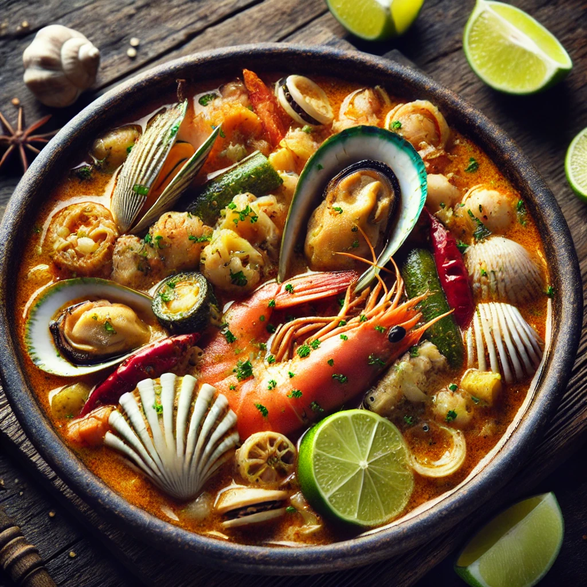

THE BUSTY MERMAID

Stormy Seas Seafood Stew
Ingredienser og Oppskrift:
Velkommen til Stormy Seas Seafood Stew – en tallerken med sjømat så frisk og smakfull at det får deg til å føle at du er på sjøen under et eventyr med storm og sjøsprøyt!
Så, hva finner du i denne utsøkte gryten?
- Frisk **laks** (for den majestetiske smaken som møter sjøen)
- Saftig **krabbe** (som om du er ute på sjøen og finner en skatt)
- Smøraktig **reker** (friskheten i hvert bitt er som sjøbris på sommeren)
- Kremet **kokosmelk** (gir en myk og fyldig tekstur, som stormen som bryter over klippene)
- Frisk **limejuice** (et hint av syrlighet for å balansere de rike smakene)
Hvordan lage denne retten:
- Start med å koke sjømatene i en stor gryte med litt smør og hvitløk.
- Hell i kokosmelken og la alt småkoke til alle ingrediensene er godt blandet.
- Skvis litt limejuice over retten og smak til med salt og pepper.
- Server med et smil og nyt smaken av stormfull sjømat!
OBS: Denne retten er kjent for å bringe eventyr til bordet – vær klar for å få en smakfull reise med hver skje!